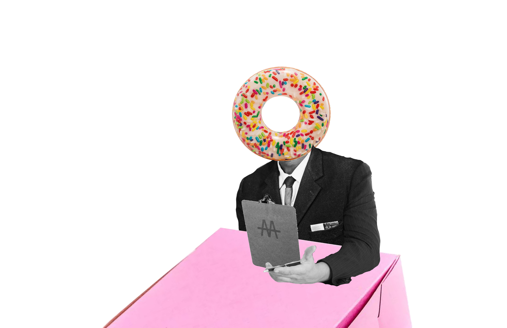

Triple A
Mollie Zhang
Diversity and Inclusion or Diversity VS Inclusion?
It started with a conversation among the thought- curators on the Editorial team. After Colton’s proposal of the “donut” diagram of diversity as the outer ring and inclusion as the inner ring, we discovered that inclusivity may be a cost to achieving higher diversity. Is it possible to enhance diversity AND inclusion simultaneously in our writing?
To answer this question, the thought-curation team designed an experiment. The editorial team was split into two separate groups to compete against each other, and each had to design a recruitment process for “Triple A multimedia design fraternity.” However, the two teams did not know that they were working on different prompts: one team was designing a selective and diverse recruitment process, while the other team was focusing on a selective and inclusive process.
